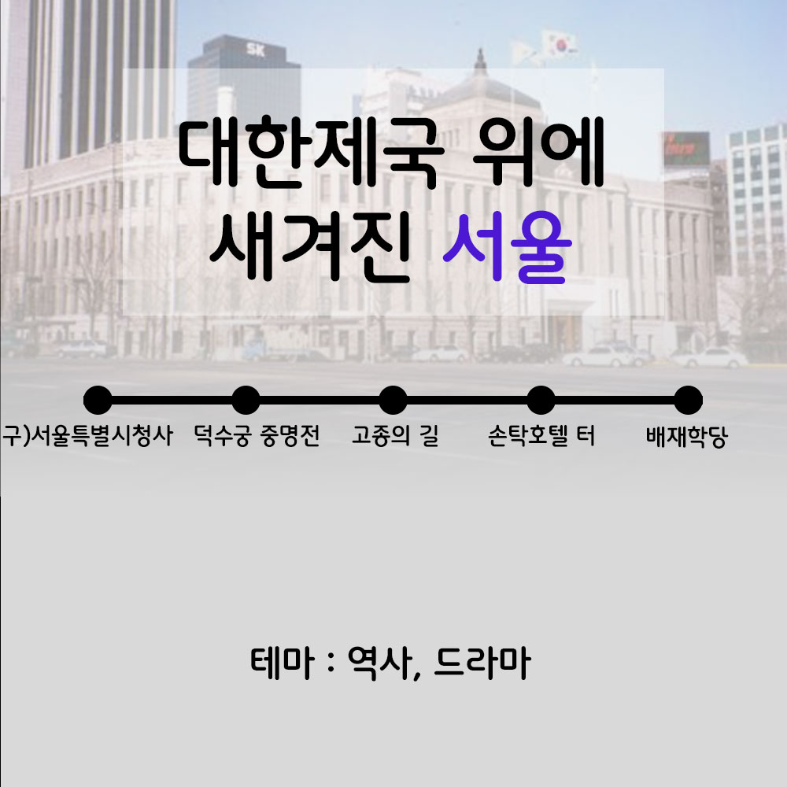

강남
과거와 현재가 만나는 곳 강남
[필경재, 한강개발기념비, 삼성 배수지공원, 압구정]
어릴적
나 어릴적 그때로
[로봇태권브이뮤지엄, 꾸러기분식, 허브천문공원, 강풀만화거리]
서울
대한제국 위에 새겨진 서울
[구)서울특별시청사, 덕수궁 중명전, 고종의 길, 손탁호텔 터, 배재학당]
동묘을지로
동묘-을지로의 뉴트로 바이브
[신설동역, 동묘 구제시장, 광장시장, 옛날다방, 을지로노가리골목]
서대문
서대문에서 외치는 대한독립만세
[독립문, 서재필동상, 서대문독립민주축제, 서대문형무소역사관]
서울 강북
서울 강북 구석구석 로컬여행
[북한산, 화계사, 숭인시장 제일분식, 나폴레옹 과자점]
서울 광진
서울 광진에서 강과 산 즐기며 힐링여행
[뚝섬유원지, 서울생각마루, 광나루, 아차산성, 아차산]
서울 도봉
서울 도봉에서 역사 문화탐방
[도봉서원, 도봉산, 김수영문학관, 전형필가옥]
서울
서울에서 만나는 백제인의 기상
[풍납동 토성, 몽촌토성, 한성백제문화제, 잠실 한강공원]
성북구
성북구, 한국 근현대의 발자취를 찾아서
[성북동, 권진규 아틀리에, 돈암시장, 최순우 가옥]
서울 관악
여유 한스푼, 서울 관악 나들이
[관악산, 관악산 호수공원, 구 벨기에 영사관]
종로
옛 정취 가득한 종로 골목여행
[종묘, 광장시장, 종로 시계골목, 탑골공원, 청진동 해장국]
이색박물관
우리가 기억할 역사 한조각, 서울 이색박문관 여행
[안중근의사기념관, 고려삼계탕, 백범김구기념관, 도산안창호기념관]
이태원
이태원이 품은 공존의 깊이
[이태원거리, 앤틱가구거리, 서울중앙성원, 해방촌]
조선왕조
조선왕조, 그들의 신화
[국립고궁박물관, 경복궁, 삼청동, 종묘]
서울 동작
한강 전투 중심지에서 휴식처로, 서울 동작의 어제와 오늘
[보라매공원, 보라매공원 에어파크, 노량진수산시장, 한강철교]
서울 여행 코스 추천
대한제국 위에 새겨진 서울
작성일 : 2023-04-20
"서울의 상징 서울시청과 그 주변의 근대 건축과 현대 건축이 결합하여 시간의 흐름을 그대로 보여주는 길을 따라 걸어보는 여행"

코스 정리 (구 서울특별시청사 > 덕수궁 중명전 > 고종의 길 > 손탁호텔 터 > 배재학당)
3.1운동부터 지금까지, 시민의 목소리를 내는 광장 [구 서울특별시청사]
구 서울특별시청사는 1926년에 경성부청사로 건립된 건물로, 광복 후 1946년부터는 서울시청사로 사용되었다가 현재는 서울도서관으로 사용되고 있다.
가슴아픈 역사의 현장 [덕수궁 중명전]
1899년경 완성된 우리나라 궁중에 지어진 최초의 서양식 건물 중 하나이자 덕수궁 대화재 이루 황제의 거처로 사용된 공간이다. 이후 을사늑약과 한일협약이 강제 체결된 가슴 아픈 역사의 현장이다.
일제에 의해 강제로 폐위된 고종이 걸었던 [고종의 길]
덕수궁 돌담길에서 정동공원과 러시아 공사관까지 120m 이어진 길로 아관파천 후 고종이 러시아 공사관에서 덕수궁을 오갈 때 사용한 길이다. 나라를 지키고자 고뇌에 쌓였을 고종의 아픔이 느껴지는 길이다.
외교관들의 영빈관 호텔이었던 [손탁호텔 터]
마리 앙투아네트 손탁이라는 여성이 1902년 설립해 손탁호텔이라는 이름이 붙었다. 손탁호텔은 조선왕실의 영빈관 역할을 하는 호텔로, 외교사절과 귀빈 등 일부 예약손님만 묵을 수 있는 고급호텔이었다.
근대식 중등 교욱기관 [배재학당]
1885년에 미국의 북감리회 선교부 선교사 아펜젤러가 세운 우리나라 최초로 외국인이 설립한 근대식 중등 교욱기관이다. 지금은 배재학당 출신 인재들의 유물들이 함께 전시되어 있어서 한국 근대교육의 역사를 살펴볼 수 있다.